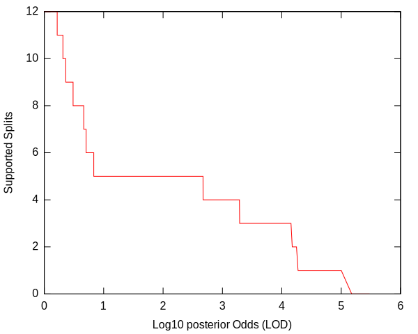
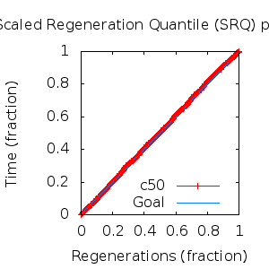
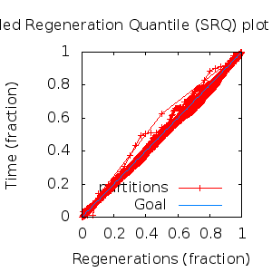

MCMC Post-hoc Analysis: 17 sequences
Data & Model
| Partition | Sequences | Lengths | Alphabet | Substitution Model | Indel Model | Scale Model |
|---|
| 1 |
E5_alpha1_alpha2_aa.fas |
71 - 84 |
Amino-Acids | S1 = lg08+f |
I1 = rs07 |
scale1 ~ gamma[0.5,2] |
Scalar variables
| Statistic | Median | 95% BCI | ACT | ESS | burnin | PSRF-CI80% | PSRF-RCF |
|---|
| prior |
-95.04 |
(-120.5, -72.93) |
32.81 |
8229 |
381
|
0.9999 | 0.9987
|
| prior_A1 |
-131.1 |
(-150.9, -116.1) |
10.89 |
24790 |
269
|
1 | 0.9981
|
| likelihood |
-1830 |
(-1846, -1815) |
14.21 |
18997 |
111
|
0.9999 | 0.9993
|
| posterior |
-1926 |
(-1951, -1903) |
31.32 |
8622 |
262
|
0.9998 | 0.9982
|
| Heat.beta |
1 |
| | | | | |
| Scale[1] |
5.268 |
(3.212, 8.047) |
1.231 |
219420 |
158
|
1 | 0.999
|
| f:pi[A] |
0.06518 |
(0.04331, 0.08863) |
7.557 |
35729 |
773
|
1 | 1.008
|
| f:pi[R] |
0.02815 |
(0.01064, 0.04982) |
8.504 |
31750 |
433
|
0.9999 | 1.004
|
| f:pi[N] |
0.02358 |
(0.009078, 0.04179) |
8.083 |
33405 |
545
|
1 | 0.9956
|
| f:pi[D] |
0.02826 |
(0.008988, 0.05367) |
8.15 |
33130 |
541
|
1 | 0.9984
|
| f:pi[C] |
0.06102 |
(0.03973, 0.08542) |
8.464 |
31901 |
298
|
1 | 1.001
|
| f:pi[Q] |
0.03378 |
(0.01556, 0.0554) |
10.88 |
24817 |
925
|
1.001 | 0.9935
|
| f:pi[E] |
0.01949 |
(0.004487, 0.03957) |
8.569 |
31509 |
826
|
1.001 | 0.998
|
| f:pi[G] |
0.02878 |
(0.01063, 0.05233) |
8.289 |
32573 |
247
|
0.9998 | 1.004
|
| f:pi[H] |
0.02566 |
(0.01154, 0.04301) |
7.861 |
34347 |
423
|
1 | 0.9983
|
| f:pi[I] |
0.07786 |
(0.05869, 0.09894) |
9.89 |
27301 |
287
|
1 | 1.004
|
| f:pi[L] |
0.1666 |
(0.1329, 0.2026) |
7.897 |
34190 |
191
|
1 | 0.9977
|
| f:pi[K] |
0.008586 |
(0.000266, 0.02384) |
10.37 |
26043 |
437
|
1 | 1.002
|
| f:pi[M] |
0.02104 |
(0.01176, 0.03184) |
7.755 |
34818 |
269
|
0.9999 | 1.001
|
| f:pi[F] |
0.07326 |
(0.05141, 0.09628) |
8.482 |
31830 |
403
|
0.9999 | 1.006
|
| f:pi[P] |
0.03191 |
(0.01135, 0.05777) |
8.5 |
31764 |
423
|
1 | 0.9985
|
| f:pi[S] |
0.07238 |
(0.04826, 0.0987) |
7.967 |
33889 |
448
|
1 | 1.007
|
| f:pi[T] |
0.06269 |
(0.04184, 0.08624) |
7.618 |
35443 |
505
|
1 | 1.001
|
| f:pi[W] |
0.0124 |
(0.003557, 0.02542) |
8.375 |
32239 |
338
|
0.9999 | 0.9982
|
| f:pi[Y] |
0.035 |
(0.01972, 0.05187) |
8.797 |
30693 |
532
|
1.001 | 0.9951
|
| f:pi[V] |
0.1067 |
(0.08135, 0.1341) |
9.906 |
27256 |
494
|
1 | 1.002
|
| rs07:mean_length |
2.719 |
(1.67, 4.385) |
3.945 |
68445 |
247
|
1 | 1.003
|
| rs07:log_rate |
-3.988 |
(-4.467, -3.515) |
2.254 |
119809 |
179
|
0.9999 | 1.001
|
| |A1| |
98 |
(95, 103) |
27.59 |
9784 |
353 |
0.7895 | 1.001
|
| #indels1 |
17 |
(15, 20) |
15.38 |
17557 |
114 |
0.75 | 0.9999
|
| |indels1| |
37 |
(32, 46) |
7.237 |
37310 |
181 |
0.8889 | 0.9999
|
| #substs1 |
343 |
(334, 351) |
15.41 |
17518 |
168 |
0.9429 | 0.9981
|
| Scale1*|T| |
5.896 |
(5.129, 6.726) |
6.12 |
44114 |
185
|
1 | 1.001
|
| |A| |
98 |
(95, 103) |
27.59 |
9784 |
353 |
0.7895 | 1.001
|
| #indels |
17 |
(15, 20) |
15.38 |
17557 |
114 |
0.75 | 0.9999
|
| |indels| |
37 |
(32, 46) |
7.237 |
37310 |
181 |
0.8889 | 0.9999
|
| #substs |
343 |
(334, 351) |
15.41 |
17518 |
168 |
0.9429 | 0.9981
|
| |T| |
1.121 |
(0.6751, 1.648) |
1 |
270003 |
175
|
1 | 0.9998
|
Phylogeny Distribution


Alignment Distribution
Partition 1
|
|
|
Diff |
|
Min. %identity |
# Sites |
Constant |
Informative |
| Initial |
FASTA |
HTML |
Diff |
|
5.13% |
84 |
1 (1.19%) |
81 (96.4%) |
| Best (WPD) |
FASTA |
HTML |
|
AU |
21.7% |
98 |
4 (4.08%) |
79 (80.6%) |
Mixing
Statistics: | scalar burnin | 925 | | scalar ESS | 8229 | | topological ESS | | | ASDSF | NA | | MSDSF | NA | | PSRF CI80% | 1.001 | | PSRF RCF | 1.008 |
|  |
Analysis
directory: /work/awillemsen/bali-phy/AlphaPVs_E5_aa_new
version: 3.3
| chain # | burnin | subsample | Iterations (after burnin) | command line | subdirectory |
|---|
| 1 |
10000 |
1 |
90000 |
bali-phy E5_alpha1_alpha2_aa.fas -s 69325 -i 100000 -n AlphaPVs_E5_alpha1_alpha2 |
AlphaPVs_E5_alpha1_alpha2-1 |
| 2 |
10000 |
1 |
90000 |
bali-phy E5_alpha1_alpha2_aa.fas -s 23456 -i 100000 -n AlphaPVs_E5_alpha1_alpha2 |
AlphaPVs_E5_alpha1_alpha2-2 |
| 3 |
10000 |
1 |
90000 |
bali-phy E5_alpha1_alpha2_aa.fas -s 83459 -i 100000 -n AlphaPVs_E5_alpha1_alpha2 |
AlphaPVs_E5_alpha1_alpha2-3 |
| P(data|M) = -1846.237 +- 0.167
|
Complete sample: 11572
topologies |
95% Bayesian credible interval: 4296 topologies |
Model and priors
Tree (+priors)
| topology | ~ uniform on tree topologies |
| branch lengths | ~ iid[num_branches[T],gamma[0.5,div[2,num_branches[T]]]] |
Substitution model (+priors)
| S1 | = |
lg08+f
| f:pi | ~ | dirichlet_on[letters[@a],1]
|
|
Indel model (+priors)
| I1 | = |
rs07
| rs07:log_rate | ~ | laplace[-4,0.707]
|
| rs07:mean_length | ~ | exponential[10,1]
|
|
Scales (+priors)
{kind=link}
{kind=link}
{kind=link}
{kind=link}
{kind=link}
{kind=link}
{kind=link}
{kind=link}